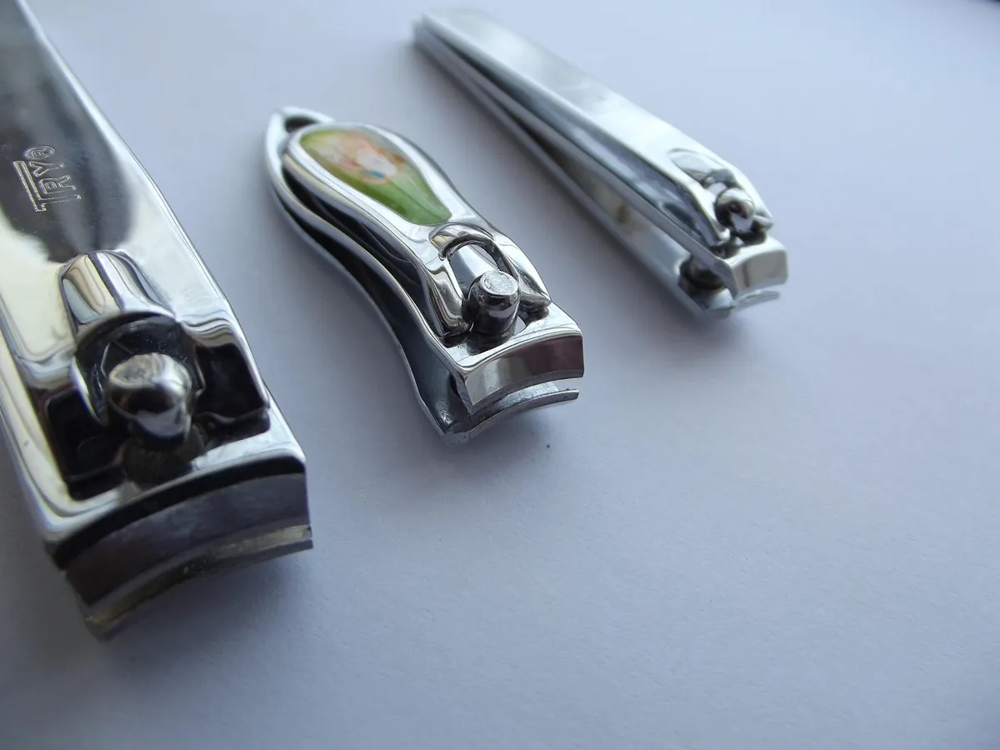
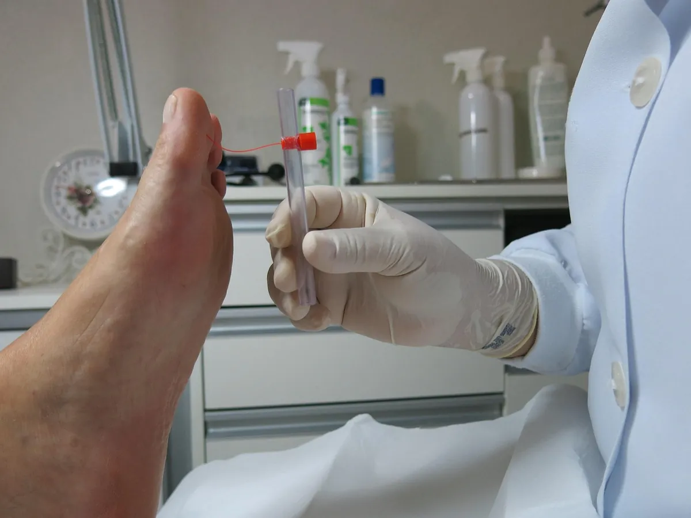

Detectar a tiempo las alteraciones en las uñas permite orientar mejor el manejo de cada caso.
Las uñas cumplen una función protectora y su aspecto puede reflejar cambios que vale la pena observar. Uno de los primeros signos suele ser el cambio de color: tonos amarillentos, blanquecinos o marrones que no desaparecen con el aseo habitual. También puede aparecer un engrosamiento progresivo que dificulta el corte, o una fragilidad que hace que la uña se quiebre con facilidad.
Otros cambios frecuentes incluyen la separación parcial de la uña del lecho ungueal, la aparición de estrías o rugosidades en la superficie, y alteraciones en la dirección del crecimiento. Estos signos no son exclusivos de una sola causa: pueden estar asociados a hongos, a traumatismos repetidos, a problemas circulatorios o a otras condiciones que conviene evaluar.
La recomendación general es no intentar autodiagnosticarse ni aplicar productos sin orientación. Una evaluación podológica permite valorar el estado de la uña, identificar posibles factores asociados y definir el manejo más adecuado. Ante cualquier cambio persistente, lo más prudente es consultar a un profesional.

Cuidado diario
Cuidados básicos para mantener tus pies saludables
Pequeños hábitos diarios contribuyen a mantener la salud de tus pies y uñas.
Mantener los pies saludables no requiere rutinas complicadas, pero sí constancia. Empezar por un buen aseo diario con agua tibia y secar bien entre los dedos ayuda a prevenir la humedad excesiva, que favorece la proliferación de microorganismos. El corte de uñas debe ser recto, sin redondear las esquinas, para evitar que se encarnen.
El calzado cumple un papel fundamental: debe ser de la talla correcta, con espacio suficiente para los dedos y materiales que permitan la ventilación. Alternar el calzado y evitar zapatos ajustados de forma prolongada reduce la presión sobre las uñas y la piel. Las medias de algodón o materiales transpirables también aportan.
Es útil revisar los pies con regularidad, especialmente si se tiene diabetes, problemas circulatorios o se practica deporte con frecuencia. Ante la aparición de durezas, cambios de color, dolor o heridas que no cicatrizan, conviene acudir a una evaluación podológica en lugar de intentar resolverlo por cuenta propia.

Prevención
¿Por qué es importante evaluar una uña alterada?
La evaluación temprana permite orientar el manejo más adecuado para cada caso.
Una uña alterada puede tener diversas causas: hongos, traumatismos, psoriasis, problemas circulatorios o incluso alteraciones sistémicas. A simple vista es difícil distinguir el origen, y confundirlo puede llevar a tratamientos que no corresponden al problema real. Por eso la evaluación profesional es el primer paso.
Durante la consulta se observa el color, el grosor, la textura y la adherencia de la uña al lecho. Se revisa también la piel circundante y se pregunta por antecedentes que puedan influir. En algunos casos puede ser necesario complementar con pruebas específicas para identificar el agente causal, especialmente cuando se sospecha una infección por hongos.
Evaluar a tiempo tiene varias ventajas: permite iniciar el manejo adecuado antes de que la alteración avance, evita tratamientos innecesarios y ayuda a descartar problemas que requieran otro tipo de atención. Si notas cambios persistentes en tus uñas, lo más recomendable es consultar a un profesional en podología.
Estamos listos para atenderte
Encuentra la sede más cercana y reserva tu atención por WhatsApp.